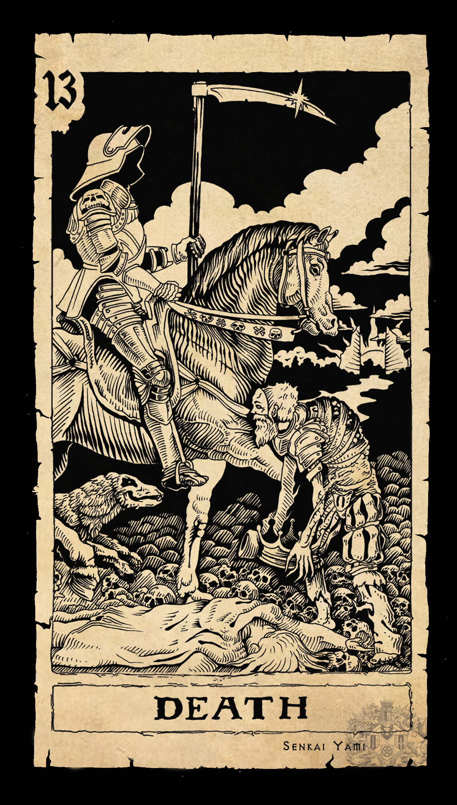

The Hydra and Death
Another mythical creature from ancient Greece, the Hydra was depicted as a gigantic, snake-like monster with many heads, each of which could dispel acid. In mythological accounts, cutting off one of the Hydra’s heads would result in two more growing into its place. Before his death at the hands of Hercules, the Hydra was known to terrify the people living in the marshes of Lerna.
Here, we see Death riding a beautiful white horse while holding up a black flag with a white pattern. It is portrayed as a living skeleton, the bones being the only part of the human body existing after death. He wears armor, which gives him his invincibility - signaling that no one can destroy Death. The white horse that he rides stands for purity, as Death purifies everyone. Beneath him, all classes of humans lie in the dirt - a king, and a pauper, meant to remind us that death does not differentiate between class, race, gender.